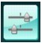

This machine has two functions for preventing the mistransmission of faxes.
-
Sending faxes after dialing the fax/telephone number twice
This function requires you to re-enter the fax/telephone number after entering the number using the Numeric buttons, so that the machine prevents you from misdialing.
-
Sending faxes after the machine checks the recipient's fax machine information
Before sending a fax, the machine checks whether the recipient's fax machine information matches the dialed number.
 Sending Faxes after Checking Information (Checking the Recipient's Information)
Sending Faxes after Checking Information (Checking the Recipient's Information)
Sending Faxes after Dialing Twice (Fax Number Re-entry)
Set FAX number re-entry to ON following the procedure below.
-
Make sure that the machine is turned on.
-
Press the Setup button.
-
Select
 Device settings, then press the OK button.
Device settings, then press the OK button. -
Use the

 button to select FAX settings, then press the OK button.
button to select FAX settings, then press the OK button. -
Use the
button to select Security control, then press the OK button. -
Use the
button to select FAX number re-entry, then press the OK button. -
Use the
button to select ON, then press the OK button.
If you send a fax with this function, the following screen is displayed after dialing using the Numeric buttons.
Enter the recipient's fax/telephone number using the Numeric buttons again.
 Note
Note-
If the number is not identical with the number entered first, the Fax standby screen is displayed.
Sending Faxes after Checking Information (Checking the Recipient's Information)
Set Check RX FAX information to ON following the procedure below.
 Important
Important-
This function is not available when you send a fax manually.
-
Make sure that the machine is turned on.
-
Press the Setup button.
-
Select  Device settings, then press the OK button.
-
Use the
button to select FAX settings, then press the OK button. -
Use the
button to select Security control, then press the OK button. -
Use the
button to select Check RX FAX information, then press the OK button. -
Use the
button to select ON, then press the OK button.Important-
Transmission will be canceled if the machine fails to receive the recipient's fax information or if the received information does not match the fax/telephone number.
-